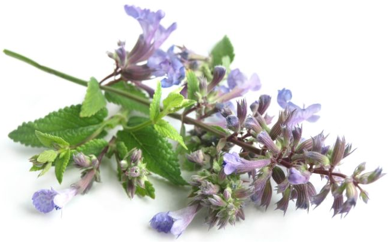

Cats have all the fun! If you’ve ever had a cat that goes bonkers for catnip, then you might be wondering about catnip for dogs too. But can dogs have catnip? Will it even have the same effect?
The good news is that catnip is safe for dogs. It’s non-toxic and is safe to consume, but wait! Before you decided to give your dog a quick catnip buzz, it’s important to learn how it affects your dog and how to offer it safely.
When it comes to any herbs, oils, or spices, it’s best to understand the benefits and precautions before you offer it to your pooch. To get started, let’s look at what catnip is.
What is Catnip?

Take a big whiff of some fresh or dried catnip, and you may find it smells vaguely familiar. That’s because catnip is a member of the mint family. Catnip goes by a few different names: catswort, catmint, and its scientific name nepeta cataria, but we’ll stick to plain old catnip.
While this popular plant is most famous for its stimulant effect on cats, catnip is also a popular ornamental plant for gardens. It’s also an effective repellent for common garden pests like aphids. For more info, check out this Ultimate Catnip Guide.
Does Catnip Work on Dogs?
It might sound strange, especially considering its name, but dogs are attracted to catnip too. You may have noticed your dog’s obsession with your cats’ catnip toys. Sure, they’re small and fun, but it’s the scent that makes them irresistible.
We know catnip isn’t toxic for dogs, but does it have the same effect on dogs that it has on cats? In most cases, no. Catnip for dogs typically provides a mellowing effect instead of the stimulating response that many cats have.
If you have a hyperactive pup at home, that might sound like a positive effect, but just like in cats, some dogs will have no attraction to the herb at all.
Benefits of Catnip for Dogs
Even if your dog isn’t interested in the plant, catnip can still have some benefits for your dog if the plant is ingested. We broke down 3 of the most notable benefits of catnip for dogs:
1. Calming Aid
Catnip usually has the opposite effect on dogs than it does on cats. Instead of being a stimulant, catnip is a mild sedative for dogs. It can be used to reduce stress, excitement, and even fearful reactions brought on by anxiety.
2. Digestive Aid
Catnip can also be used to reduce gas and digestive discomfort. When ingested, it can prevent gas formation and reduce cramping. This means fewer dog farts! If your dog is showing signs of minor digestive issues, like diarrhea or constipation, catnip’s antispasmodic properties can help by soothing the intestinal walls. This can reduce pain and improve digestion.
3. Urinary and Kidney Care
You can use catnip to promote healthy urination. This may not strike you as a particularly positive quality, but is an excellent way to promote urinary tract and kidney health.
Using a mild diuretic, like catnip, can help your dog flush out toxins, bacteria, and debris that could lead to urinary tract infections, stones, or blockages. In combination with products like cranberry powder, catnip may help to prevent recurring urinary tract infections.
Just remember that the more they pee, the more they’ll need to drink to prevent dehydration. Consider adding wet food to your dog’s diet or offering bone broth as a treat. This will keep your pet hydrated and aid in flushing out their system.
Dangers of Catnip for Dogs: Too Much of a Good Thing
So, is catnip safe for dogs? Yes, but before you get him hooked on the kitty green, you need to know how to offer catnip to your dog safely. So far, catnip seems pretty beneficial, but giving your dog too much of a good thing can also be bad. Dosing your dog with too much nip can actually cause digestive issues, vomiting, and respiratory depression.
How Much Catnip Can Dogs Have?
When introducing catnip to your dog, make sure you do it a little at a time. 1/8 tsp mixed into their food or water for the day is a good starting point for a small to medium-sized dog. Larger breeds can have 1/4 tsp per day. Talk to your vet before offering catnip to dogs that take medications or suffer from any illnesses or diseases. It’s always better to be safe than sorry.
Pregnant Dogs Can’t Have Catnip
If your dog is pregnant, offering catnip is a significant risk. It can act as a uterine stimulant, which can cause premature labor or birth complications. This goes for cats too, so if you have a pregnant pet in the house, make sure to keep all catnip out of reach. Replace toys with catnip-free options until after your pet has given birth.
Anise: The Better Catnip for Dogs
If you are looking for something that will give your dog a playful energy dose, as catnip does for cats, then you should try anise. Anise is the unofficial “dognip.”
Aniseed is a plant from the same family as carrots and celery. Anise has a licorice-like flavor and has long been used as a digestive aid in humans. While some dogs react to the scent of anise and others won’t, the strong scent will attract your dog whether he gets the catnip-like reaction or not.
Anise oil can be used on toys to help stimulate playtime and encourage physical activity. Anise is also an effective flatulence reducer, like catnip. Feeding anise seeds or oil can help to cut down on gas and improve digestion.
A Little Goes a Long Way
Much like offering your dog catnip, anise should be given in moderation. A small pinch of crushed seeds or a few drops of the essential oil is all you need to get the positive effects. You can add anise to a variety of food formats, or you can add anise to your favorite homemade recipes like treats, bone broth, or dogsicles.